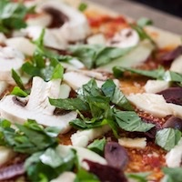
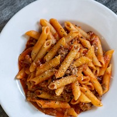
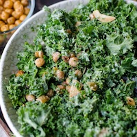
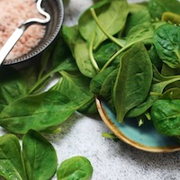
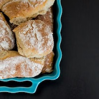

Vegetarian & Vegan

A healthy pizza baked on sourdough with
Pizza ai Funghi
A healthy pizza baked on sourdough with
fresh mushrooms and marinated olives.
Is best served fresh from oven accompanied by
a red glass of Italian wine.

Spicy pasta with tomato sauce,
Spicy Pasta
Spicy pasta with tomato sauce,
red chili, vegan salsicca and parmesan. Top it
off with some spinach leafes for that extra touch.

Kale salad with chickpeas
A fresh salad that works during all seasons.
Kale salad with chickpeas
and pesto
A fresh salad that works during all seasons.
Organic kale mixed with home-made pesto and
crispy roasted chickpeas. This dish is best served
with a glass of savignon blanc.

Greek lasagna made on organic spinach and
Vegetarian lasagna
Greek lasagna made on organic spinach and
feta cheese with a side of greek salad. A meal that
the whole
family will enjoy.

Gluten free garlic bread rolls that are a perfect